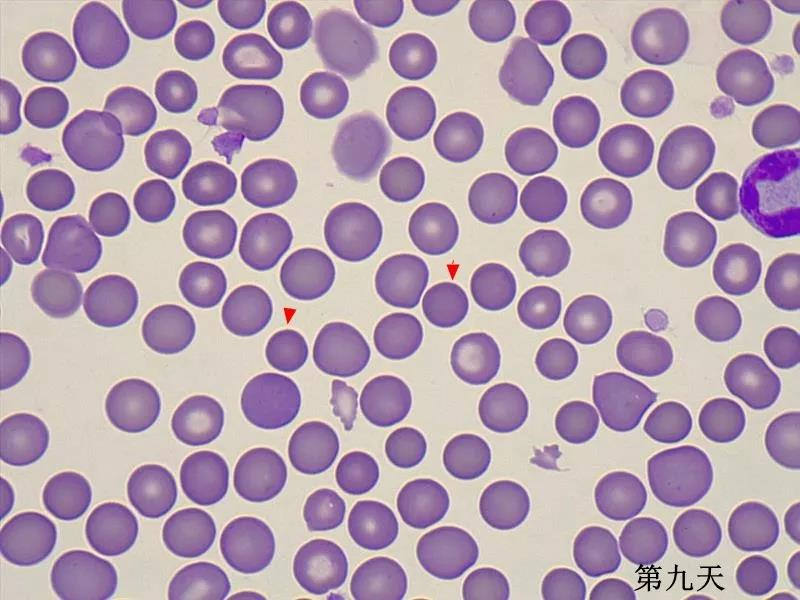

76
76
免疫介导性溶血性贫血（IMHA），是因为抗体引起的红细胞被破坏。特发性IMHA是犬免疫介导性疾病中最常见的疾病。犬的死亡率在21-83%不等，通常最危险的时间段在发病后的2周内。有研究表明，大部分的死亡和血小板栓塞有关。因为50%的IMHA犬同时存在凝血异常，容易出现弥散性血管内凝血（DIC）。/p>
此次笔者就近期遇到的一例高度疑似特发性IMHA病例，尤其是红细胞渗透脆性试验在其中的应用做相关分享。
此次笔者就近期遇到的一例高度疑似特发性IMHA病例，尤其是红细胞渗透脆性试验在其中的应用做相关分享。
1病例信息
泰迪，1.5岁，雄性，未去势，4.25kg
2临床及实验室检查
2.1病史问诊
- 三天前不吃东西，但对喜欢的食物仍有食欲
- 昨天开始精神变差，不爱动，大小便颜色偏深
- 平时吃犬粮，蛋黄和水果（苹果少量）
- 体内外驱虫3个月做一次，上一次做是3个月前
- 平时不接触其他狗，有捡东西吃的习惯
2.2体格检查
BCS4/9，双耳清洁，可视粘膜稍干，未见明显发黄，脱水约6%，CRT约2秒； 肺音听诊尚可，心音听诊有心杂音（II/IV），PMI在左侧心尖部; 腹部触诊紧张
2.3实验室检查
就诊当日——
CBC：再生反应明显的严重贫血，白细胞也有轻度增多，血小板偏低
血涂片：红细胞大小不等，球型红细胞（25个/油镜）；白细胞尚可；血小板未见凝集，5-20个/油镜
生化：未见明显异常
4Dx：阴性
PCR-巴贝斯：阴性
2.4影像学检查
主人十分介意剃毛，未能做超声检查
3诊断
特发性免疫介导性溶血性贫血
4治疗及复诊
来院当天立即建议输血，之后开始口服泼尼松龙，10mg/2次/日；3周后减量，5mg/2次/日；6周后减量至0.5mg/2次/日，到目前已经停药，情况暂时都比较稳定。 同时口服保肝药物。
图红箭头指示的是球型红细胞，可见诊断当天，红细胞大小不等，有多染性，球型红细胞大量，之后逐渐减少，第30天的时候几乎看不到球型红细胞。
5讨论
贫血是指外周血里的红细胞数量、血细胞压积（Hct）和血红蛋白降低，贫血会导致血液的携氧能力下降。贫血常见的原因有：红细胞生成减少，红细胞丢失或破坏增加，或者多种因素同时存在。是否有足够的红细胞再生反应，是区分贫血的关键。
骨髓内，红细胞前体细胞增殖和分化，最终发育为网织红细胞，成熟的红细胞，整个过程大约需要5-7天。健康动物的网织红细胞在骨髓内停留2-3天后，被释放进入外周血。进入外周血后的24-48小时，网织红细胞内残余的RNA消失，发育为成熟的红细胞。在溶血或失血过程中，外周血中的网织可能会在48小时内开始增加。
此次的讨论，主要想集中于溶血性贫血的诊断方面，一个是关于溶血性贫血的病因筛查，一个是关于红细胞渗透脆性试验的讨论。
溶血性贫血的原因
通常溶血性贫血的原因会分为三类：
l 获得性非免疫介导性溶血性贫血
l 血细胞吞噬性疾病
l 免疫介导性溶血性贫血
表格1溶血性贫血的常见原因
在这个病例中，结合相关病史，之前没有用药或者吃过洋葱这类食物，同时检测4Dx和巴贝斯的PCR都是阴性，血涂片看到大量球形红细胞的情况下，虽然未能做腹超，但1.5岁的泰迪犬，肿瘤的概率相对较低，所以最终诊断为特发性的免疫介导性溶血性贫血，不排除肿瘤引发的可能。
红细胞渗透脆性试验（osmotic fragility testing, OFT）
OFT是用于区分溶血性贫血和非溶血性贫血的一种方法。在IMHA时，血涂片中看到大量的球形红细胞，但球形红细胞的识别具有一定的主观性，所以可以用OFT试验来帮助判断红细胞的细胞膜情况。但除了IMHA以为，遗传性的红细胞膜异常等影响红细胞膜稳定性的疾病，同样会出现阳性的结构。
准备
1.4个清洁的小管
2.5ml注射器
3.健康犬猫的血液（新鲜血液、EDTA血液、肝素血液），作为对照
4.患病犬猫的血液（新鲜血液、EDTA血液、肝素血液）
方法
1. 分组
2.充分混匀
3.室温下静置5分钟
4.离心5分钟，转速2431*g
5.结果分析
1号和3号管：透明，红细胞沉在管底
2号管：有轻度的溶血，如果动物已经有溶血存在
4号管：和2号管相比，溶血更明显
图1从左往右，依次是：正常犬+生理盐水；患犬+生理盐水；正常犬+稀释生理盐水；患犬+稀释生理盐水。可见第4组上清液颜色最红。 通过最近病例检测，发现溶血性贫血时，大部分OFT试验都是阳性，反之，比如非再生性贫血或失血性贫血，则OFT试验都是阴性。之后笔者会继续扩大检测的数量，进一步评估OFT试验在溶血性贫血中的诊断意义。
参考文献
1.Stephen J. Ettinger etc. Textbook of veterinary internal medicine, 8th, 2017
2.Tristan K. Weinkle, DVM etc. Evaluation of prognostic factors, survival rates, and treatment protocols for immune-mediated hemolytic anemia in dogs: 151 cases (1993-2002). JAVMA, Vol 226, No 11,June 1, 2005.
3.Suliman AI-Ghazlat, BVSc, DACVIM. Immunosuppressive therapy for canine immune-mediated hemolytic anemia. Compendium: continuing education for veterinarians.
4.Burgess K, Moore A, Rand W, et al. Treatment of immunemediated hemolytic anemia in dogs with cyclophosphamide. J Vet Intern Med 2000; 14: 456-462.
5.John W. Harvey, DVM, PhD, DACVP. Veterinary hematology, a diagnostic guide and color atlas, 2012